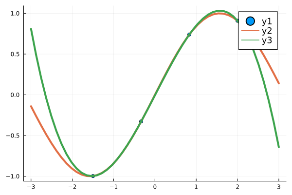
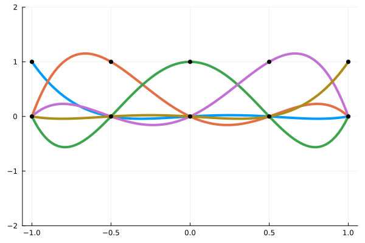
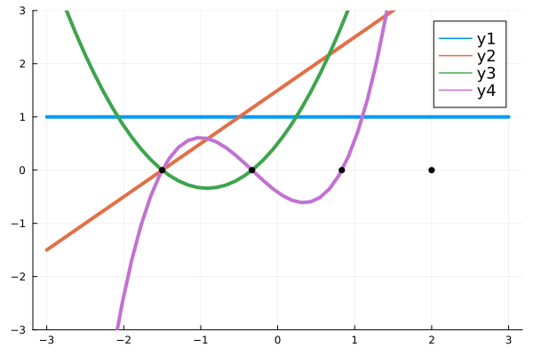
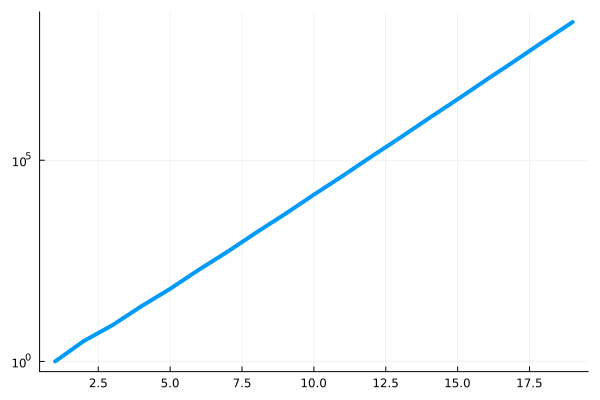
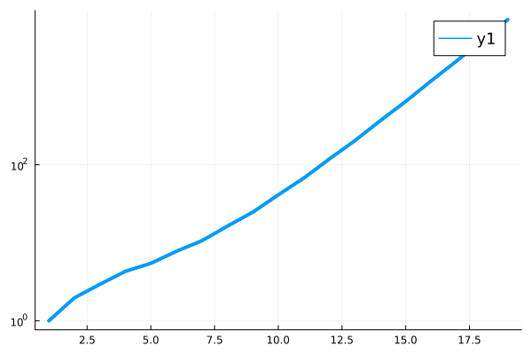
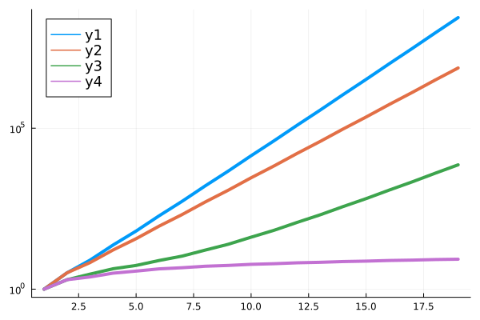
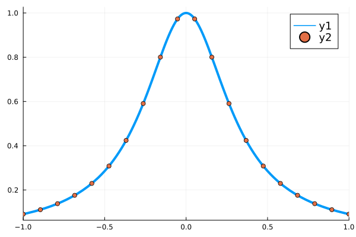
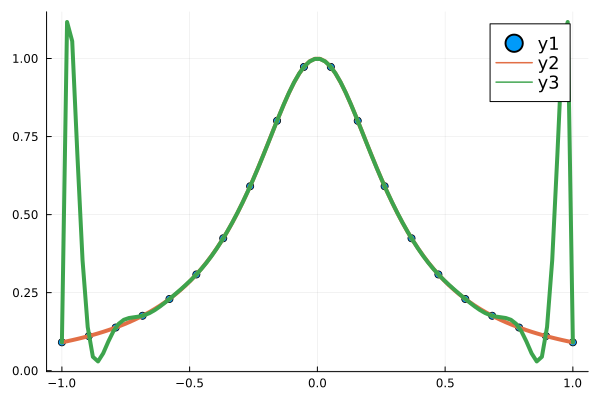
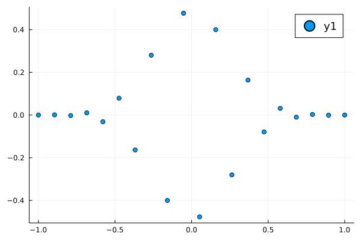
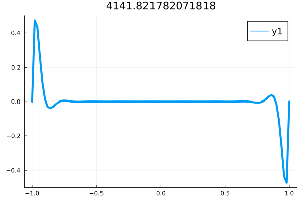

2023-03-08 Polynomial Interpolation#
Last time#
Reflection on algorithm choices
Low-rank structure
Example of interacting galaxies
Today#
Interpolation using polynomials
Structure of generalized Vandermonde matrices
Conditioning of interpolation and Vandermonde matrices
Choice of points and choice of basis
using LinearAlgebra
using Plots
default(linewidth=4, legendfontsize=12)
function vander(x, k=nothing)
if isnothing(k)
k = length(x)
end
m = length(x)
V = ones(m, k)
for j in 2:k
V[:, j] = V[:, j-1] .* x
end
V
end
function peanut()
theta = LinRange(0, 2*pi, 50)
r = 1 .+ .4*sin.(3*theta) + .6*sin.(2*theta)
r' .* [cos.(theta) sin.(theta)]'
end
function circle()
theta = LinRange(0, 2*pi, 50)
[cos.(theta) sin.(theta)]'
end
function Aplot(A)
"Plot a transformation from X to Y"
X = peanut()
Y = A * X
p = scatter(X[1,:], X[2,:], label="in")
scatter!(p, Y[1,:], Y[2,:], label="out")
X = circle()
Y = A * X
q = scatter(X[1,:], X[2,:], label="in")
scatter!(q, Y[1,:], Y[2,:], label="out")
plot(p, q, layout=2, aspect_ratio=:equal)
end
Aplot (generic function with 1 method)
What is interpolation?#
Given data \((x_i, y_i)\), find a (smooth?) function \(f(x)\) such that \(f(x_i) = y_i\).
Data in#
direct field observations/measurement of a physical or social system
numerically processed observations, perhaps by applying physical principles
output from an expensive “exact” numerical computation
output from an approximate numerical computation
Function out#
Polynomials
Piecewise polynomials (includes nearest-neighbor)
Powers and exponentials
Trigonometric functions (sine and cosine)
Neural networks
Interpolation fits the data exactly!
Polynomial interpolation#
We’ve seen how we can fit a polynomial using Vandermonde matrices, one column per basis function and one row per observation.
It’s possible to find a unique polynomial \(\mathbf p\) when which of the following are true?
\(m \le n\)
\(m = n\)
\(m \ge n\)
Polynomial interpolation with a Vandermonde matrix#
x = LinRange(-1.5, 2, 4)
y = sin.(x)
A = vander(x)
p = A \ y
scatter(x, y)
s = LinRange(-3, 3, 50)
plot!(s, [sin.(s) vander(s, length(p)) * p])

Vandermonde matrices can be ill-conditioned#
A = vander(LinRange(-1, 1, 20))
cond(A)
2.7224082312417406e8
It’s because of the points \(x\)?
It’s because of the basis functions \(\{ 1, x, x^2, x^3, \dotsc \}\)?
Lagrange Interpolating Polynomials#
Suppose we are given function values \(y_0, \dotsc, y_m\) at the distinct points \(x_0, \dotsc, x_m\) and we would like to build a polynomial of degree \(m\) that goes through all these points. This explicit construction is attributed to Lagrange (though he was not first):
What is the degree of this polynomial?
Why is \(p(x_i) = y_i\)?
How expensive (in terms of \(m\)) is it to evaluate \(p(x)\)?
How expensive (in terms of \(m\)) is it to convert to standard form \(p(x) = \sum_{i=0}^m a_i x^i\)?
Can we easily evaluate the derivative \(p'(x)\)?
What can go wrong? Is this formulation numerically stable?
Lagrange interpolation in code#
function lagrange(x, y)
function p(t)
m = length(x)
w = 0
for (i, yi) in enumerate(y)
w += yi * (prod(t .- x[1:i-1]) * prod(t .- x[i+1:end])
/ (prod(x[i] .- x[1:i-1]) * prod(x[i] .- x[i+1:end])))
end
w
end
return p
end
p = lagrange(x, y)
scatter(x, y)
plot!(s, [sin.(s) p.(s)])
# Notice how important this is
prod(Float64[])
1.0
We don’t have cond(lagrange(x, y))#
It’s just a function and we know
We also don’t have an easy way to evaluate derivatives.
k = 5; xx = LinRange(-1, 1, k)
B = vander(s, k) / vander(xx)
plot(s, B)
scatter!(xx, [zero.(xx) one.(xx)], color=:black, legend=:none, ylims=(-2, 2))

Newton polynomials#
Newton polynomials are polynomials
This gives the Vandermonde interpolation problem is
How does the Vandermonde procedure change if we replace \(x^k\) with \(n_k(x)\)?
Does the matrix have recognizable structure?
function vander_newton(x, abscissa=nothing)
if isnothing(abscissa)
abscissa = x
end
n = length(abscissa)
A = ones(length(x), n)
for i in 2:n
A[:,i] = A[:,i-1] .* (x .- abscissa[i-1])
end
A
end
A = vander_newton(s, x)
plot(s, A, ylims=(-3, 3))
scatter!(x, [zero.(x)], color=:black, label=nothing)

p = vander_newton(x, x) \ y
scatter(x, y)
plot!(s, [sin.(s), vander_newton(s, x) * p])
Newton Vandermonde matrix structure#
How much does it cost to solve with a general \(n\times n\) dense matrix?
\(O(n \log n)\)
\(O(n^2)\)
\(O(n^3)\)
vander_newton(LinRange(-1, 1, 5))
5×5 Matrix{Float64}:
1.0 0.0 -0.0 0.0 -0.0
1.0 0.5 0.0 -0.0 0.0
1.0 1.0 0.5 0.0 -0.0
1.0 1.5 1.5 0.75 0.0
1.0 2.0 3.0 3.0 1.5
How much does it cost to solve with a Newton Vandermonde matrix?
How is the conditioning of these matrices?#
vcond(mat, points, nmax) = [cond(mat(points(-1, 1, n))) for n in 2:nmax]
plot([vcond(vander, LinRange, 20)], yscale=:log10, legend=:none)

A well-conditioned basis#
function vander_legendre(x, k=nothing)
if isnothing(k)
k = length(x) # Square by default
end
m = length(x)
Q = ones(m, k)
Q[:, 2] = x
for n in 1:k-2
Q[:, n+2] = ((2*n + 1) * x .* Q[:, n+1] - n * Q[:, n]) / (n + 1)
end
Q
end
vander_legendre (generic function with 2 methods)
plot([vcond(vander_legendre, LinRange, 20)], yscale=:log10)

A different set of points#
CosRange(a, b, n) = (a + b)/2 .+ (b - a)/2 * cos.(LinRange(-pi, 0, n))
plot([vcond(vander, LinRange, 20)], yscale=:log10, legend=:topleft)
plot!([vcond(vander, CosRange, 20)], yscale=:log10)
plot!([vcond(vander_legendre, LinRange, 20)], yscale=:log10)
plot!([vcond(vander_legendre, CosRange, 20)], yscale=:log10)

What’s wrong with ill-conditioning?#
runge1(x) = 1 / (1 + 10*x^2)
x = LinRange(-1, 1, 20) # try CosRange
y = runge1.(x)
plot(runge1, xlims=(-1, 1))
scatter!(x, y)

ourvander = vander_legendre # try vander_legendre
p = ourvander(x) \ y;
scatter(x, y)
s = LinRange(-1, 1, 100)
plot!(s, runge1.(s))
plot!(s, ourvander(s, length(x)) * p)

cond(ourvander(s, length(x)) / ourvander(x))
4115.28530679841
cond(ourvander(x))
7274.598185488539
Worst vector#
A = ourvander(s, length(x)) / ourvander(x)
U, S, V = svd(A)
scatter(x, V[:, 1:1])

plot(s, U[:,1], title=S[1])
